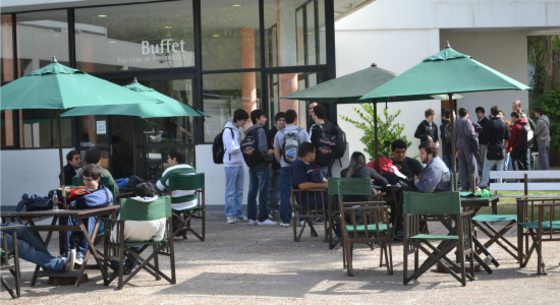

Buffet
El buffet de la Facultad de Informática está pensado como un espacio de esparcimiento para los estudiantes. Cuenta con ambiente climatizado (aire frío-calor, calefactores, ventiladores) y con las prestaciones de conexiones de red de la Facultad. Tiene metegoles para los tiempos libres, pero también puede constituirse en una cálida sala de estudios.
El buffet es gestinado por el Centro de Estudiantes y está abierto de 8 a 20 hs. Tiene servicio de cafetería y matería (facilitan el préstamo de equipos de mate), así como agua caliente gratuita.
Posee, asimismo, becas para estudiantes (exclusivamente de la FI) que necesiten trabajar. Aquellos interesados concurrir al directamente al Buffet.
